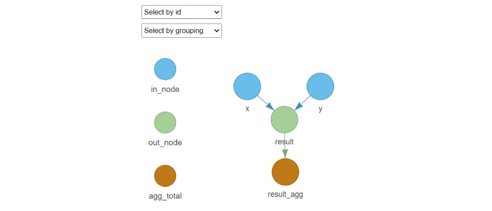

Framework for building modular Monte Carlo risk analysis models. It extends the capabilities of mc2d to facilitate working with multiple risk pathways, variates and scenarios. It provides tools to organize risk analysis in independent flexible modules, perform multivariate mcnode operations, automate the creation of mcnodes and visualize risk analysis models.
Installation
Install from CRAN:
install.packages("mcmodule")
library("mcmodule")Install latest development version from GitHub (requires devtool package)
# install.packages("devtools")
devtools::install_github("NataliaCiria/mcmodule")Set up an mcmodel
- Create a data frame with input parameter
example_data <- data.frame(
category_1 = c("a", "b", "a", "b"), # Category 1 (e.g., type)
category_2 = c("blue", "blue", "red", "red"), # Category 2 (e.g., group)
x_min = c(0.07, 0.3, 0.2, 0.5), # Minimum value for parameter x
x_max = c(0.08, 0.4, 0.3, 0.6), # Maximum value for parameter x
y = c(0.01, 0.02, 0.03, 0.04) # Value for parameter y
)- Define the keys that uniquely identify each row in your data
example_data_keys <- list(
example_data = list(
cols = names(example_data), # All columns in the data
keys = c("category_1", "category_2") # Unique identifiers for each row
)
)- Define Monte Carlo node table (mctable) indicating how to build the stochastic nodes (you can use this csv template)
example_mctable <- data.frame(
mcnode = c("x", "y"), # Names of the nodes
description = c("Probability x", "Probability y"), # Descriptions
mc_func = c("runif", NA), # Distribution function for x, none for y
from_variable = c(NA, NA), # Source variable (not used here)
transformation = c(NA, NA), # Transformation (not used here)
sensi_analysis = c(FALSE, FALSE) # Include in sensitivity analysis
)- Write model expression indicating how to combine the parameters
example_exp <- quote({
result <- x * y # Calculate result as product of x and y
})- Build the mcmodule with
eval_module(), creating the stochastic nodes and evaluating the expression
example_mcmodule <- eval_module(
exp = c(example = example_exp), # Model expression(s)
data = example_data, # Input data
mctable = example_mctable, # Node definitions
data_keys = example_data_keys # Data keys for matching
)- Once you have created a mcmodule object, you can use other package functions to summarize and visualize mcnodes, calculate totals, and combine them with other mcmodules
# Summarize the 'result' node
mc_summary(example_mcmodule, "result")
# Get 'result' aggregated by category 1
example_mcmodule<-example_mcmodule%>%
agg_totals(
mc_name = "result",
agg_keys = c("category_1")
)
# Print aggregated 'result'
example_mcmodule$node_list$result_agg$summary
# Visualize the mcmodule
mc_network(example_mcmodule, legend = TRUE)
Further documentation and examples can be found in the vignette and in the introduction article.
Citations
If you use mcmodule in your research, please cite:
Ciria, N. (2024). mcmodule: Modular Monte Carlo Risk Analysis. R package version 1.0.0. https://github.com/NataliaCiria/mcmodule